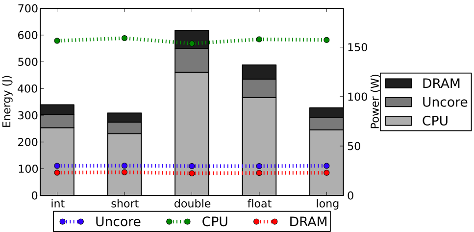

## What is jRAPL?
jRAPL is framework for profiling Java programs running on CPUs with Running Average Power Limit (RAPL) support.
## But, what is RAPL?
RAPL is a set of low-level interfaces with the ability to monitor, control, and get notifications of energy and power consumption data of different hardware levels.
Originally designed by Intel for enabling chip-level power management, RAPL is widely supported in today's Intel architectures, including Xeon server-level CPUs and the popular i5 and i7.
RAPL-enabled architectures monitor the energy consumption infor- mation and store it in Machine-Specific Registers (MSRs). Such MSRs can be accessed by OS, such as the msr kernel module in Linux.
RAPL is an appealing design, particularly because it allows energy/power consumption to be reported at a fine-grained manner, e.g., monitoring CPU core, CPU uncore (L3 cache, on-chip GPUs, and interconnects), and DRAM separately.
jRAPL can be viewed as a software wrapper to access the MSRs.
## How does jRAPL work?
The user interface for jRAPL is simple.
For any block of code in the application whose energy information is to the interest of the user, the programmer simply needs to enclose the code block with a pair of `statCheck` invocations.
For example, the following code snippet attempts to measure the energy consumption of the `doWork` method, whose value is the difference between `beginning` and `end`:
```
double beginning = EnergyCheck.statCheck();
doWork();
double end = EnergyCheck.statCheck();
```
## Unique advantages
- _Refined Energy Analysis_: thanks to RAPL, our library can not only report the overall energy consumption of the program, but also the breakdown (1) among hardware components and (2) among program components (such as methods and code blocks). As we shall see, refined hardware-based analysis allows us to understand the relative activeness of different hardware compo- nents, ultimately playing an important role in analyzing the energy behaviors of programs. In meter-based approaches, hardware design constraints often make it impossible to measure a particular hardware component (such as CPU cores only, or even DRAMs because they often share the power supply cables with the motherboard).
- Synchronization-Free Measurement: in meter-based measurements, a somewhat thorny issue is to synchronize the beginning/end of measurement with the beginning/end of the execution of interest. This problem would be magnified if one considers fine-grained code-block based measurement, where the problem de facto becomes the synchronization of measurement and the program counter. With jRAPL, the demarcation of measurement coincides with that of execution; no synchronization is needed.
## Case study
As an ilustration on how jRAPL works, we used Sunflow, from the well-known [DaCapo suite benchmark](http://www.dacapobench.org). Sunflow renders a set of images using ray tracing, a CPU-intensive benchmark. The original program represents rendering data in type `double`. We performed our experiments by varying the data types appearing in the rendering method from double to `short`, `int`, `float`, and `long`. The rest of the source code remained unchanged. Figure below some details that would hard to find otherwise (bars mean energy consumption, lines mean power consumption). In particular, we can see that the CPU power consumption (green line) is much higher than Uncore and DRAM together (blue and red lines, respectively), which is mainly due to the CPU-intensive nature of the benchmark.
<center>

</center>
## Want to know more about?
If you are interested in the details of jRAPL, please read our [FASE'2015 paper](http://gustavopinto.org/lost+found/fase2015.pdf).
## Source code
The source code is available [here](https://github.com/kliu20/jRAPL).